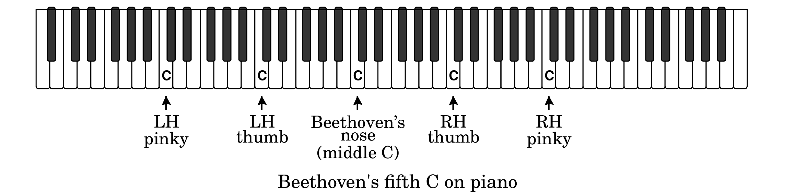
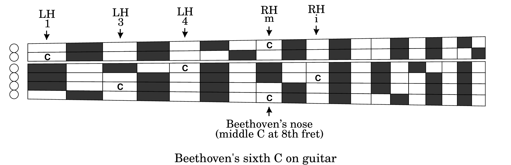

No book on guitar technique would be complete without attention to proper body position. The literature on this subject contains many fine descriptions concerning proper placement of the fingers, thumb, wrist, arm, shoulder and even the feet, but scarcely any mention the nose, proper placement of which is essential in sight reading and in developing the habits of polite posture for public performance.
Mothers say “Keep your fingers away from your nose! It's disgusting!” To which we would add the corollary “Keep your nose away from your fingers!” (same reason). If you are sight reading, you've got to keep your nose in the music, not on the fretboard. Attempting to alternate between the two is an invitation to losing your place in the music. And if you practice with your nose on the fretboard, you will surely perform with your nose on the fretboard.
We don't have enough noses on which to count the number of times we've attended concerts where esteemed guitarists appear to have their noses glued to the fretboard as though by some sticky colloidal substance. Disgusting! Evidently such esteemed guitarists never developed good sight reading habits (which would have kept their noses off the fretboard) nor listened to their mothers.
Let us cement this image (please forgive) with the well known though possibly apocryphal story of how the young Beethoven would challenge his friends to play five C's simultaneously on the piano. At an age when their hand spans could scarcely reach one octave much less two, all they could manage using both hands was four C's. The trick Beethoven reportedly showed them, was to play the fifth C with the nose, as illustrated below:
There is an analogous story, though less well known and more possibly apocryphal, of how Beethoven played six C's on the guitar. We use this story to cement the image (again forgive) that (a) there is at least one C on every string of the guitar, and (b) the one on the sixth string is special. Here is Beethoven's solution on the guitar (in the diagram, “i” and “m” on the right hand denote the index and middle fingers, respectively; strum with “p”, the thumb):
You can now and forevermore remember the C at fret 8 on string 6 (the only C on the sixth string) as the sticky spot where Beethoven played his sixth C on guitar. In fact, it is also middle C on the guitar, being one of exactly two places on the fretboard for this note (the other is on the fifth string and labeled LH 3 in the above diagram). Look again at the diagram and realize that you now also know where the only C is on the first string; like Beethoven's sixth C, it is at fret 8 because (as you know) both the first and the sixth strings are tuned to open E's, two octaves apart. So a C on the first string is at the same fret as a C on the sixth string. Let these C's stick (forgive again) in your memory.
While the present author heartily recommends playing Beethoven on guitar (it's beautiful), Thou Shouldst Not play guitar like Beethoven (it's disgusting). So always keep your head up with your eyes on the music whenever you sight read or practice. Otherwise your performances will look like you're playing with your nose.
Coda: Mothers also say “Use a handkerchief!” At least some of the aforementioned offending guitarists can be seen to carry a handkerchief onstage in their performances, no doubt to wipe off the fretboard around Beethoven's sixth C.